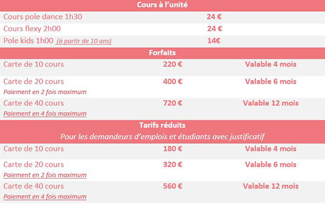

Cours et tarifs
Les cours de pole dance
Pour les cours de pole dance collectif les élèves sont deux par pole donc 8 maximum par cours
Les cours de pole dance d'une durée 1h30 et sont composée de 30 min d'échauffement et d'étirement, de 50 minutes de pratique ou sont enseigner différentes figure adaptées selon le niveau de chacune et pour finir 10 minutes d'étirement/ relaxation
Les cours de flexy
Pour les cours de flexy les élèves sont maximum 10 par cours
Les cours de flexy permettent de travailler la flexibilité du corps afin de nous permettre de passer certaines figures et de gagner qui demandent de la souplesse.
La tenue
Il est important d’avoir les bras et les jambes nues pour que la peau accroche bien la barre. Un débardeur ou une brassière de sport pour le haut, un short court pour le bas. Le principal est que vous vous sentiez à l’aise. Les chaussures ne sont pas obligatoires vous pouvez pratiquer pieds nus.
Il est obligatoire de ne pas mettre de produits gras type huile ou crème sur la peau la veille d'un cours de Pole Danse, pour eviter de glisser de la barre.